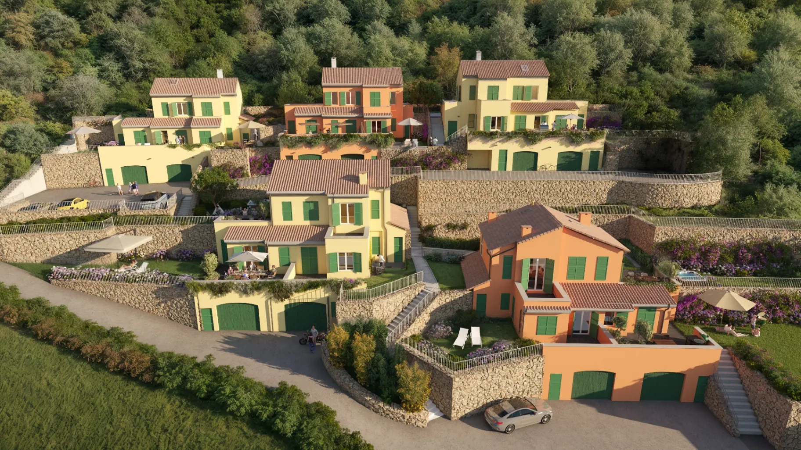
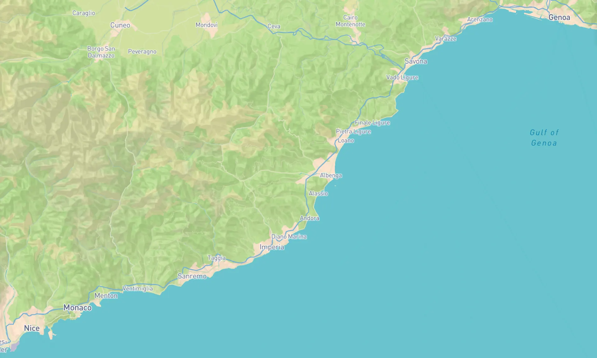

Venti appartamenti contemporanei in cinque ville su una collina recintata sopra Finale Ligure.

Rendering della residenza completata
Uno spazio per la vita privata
Venti case in cinque ville, inserite nel paesaggio naturale. Un’architettura curata, la bassa densità abitativa e l’individualità di ogni abitazione creano calore, privacy e comfort.
Ville residenziali
5
Appartamenti
20
Superficie residenziale
1.800 m²
Terreno privato
5.500 m²
Fase 1: M4 e M5 sono completati
Completata nei tempi e pronta da abitare. Otto residenze in vendita, con terrazze, giardini privati, garage e cantine.
Altri dodici appartamenti, quattro per villa: residenze al piano terra con giardini privati e terrazze panoramiche. In costruzione, vendite aperte.
Fine lavori prevista Q1 2027.
Costruito con standard elevati
Sicurezza sismica
Progettato secondo i più alti standard di resistenza sismica, per la massima tranquillità.
Isolamento termico
Progettazione ad alta efficienza energetica con isolamento di qualità, per il comfort in ogni stagione.
Materiali pregiati
Finiture selezionate e materiali naturali nella tradizione artigiana mediterranea.
Impianti moderni
Impianti contemporanei di riscaldamento, raffrescamento e acqua per un abitare sostenibile.
Otto appartamenti, pronti oggi
Offerta limitata: solo 8 appartamenti nella prima fase, negli edifici M4 e M5, tutti con vista mare, spazi esterni privati e finiture pregiate. Vendite aperte da aprile 2026.
Appartamenti da€149.000
Pronti da abitare
Terrazze e giardini privati
Garage e cantine
Una camera e un bagno ciascuno
Completati, Fase 1In progetto, Fase 2
Cinque ville, venti residenzeCinque edifici su una collina privata, ognuno pensato per privacy, luce e vista mare. Scegli una villa sulla planimetria.
AppartamentoTotaleTerrazzaGiardinoExtraStato
M4-APiano terra, 1 camera, 1 bagnoTotale78 m²Terrazza25 m²Giardino51,32 m²Cantina 8 m², posto auto 20 m²Disponibili
Interni e terrazze sono rendering; le immagini indicate come «foto dal vero» sono fotografie.
Dove l’architettura incontra il paesaggio
Una rara combinazione di posizione, qualità e stile di vita sulla Riviera Ligure.
Vista mare e montagne
Panorami aperti sul Mar Ligure e sulle montagne circostanti da ogni residenza, da una posizione rialzata in collina.
Venti case su 5.500 m²
Un terreno privato recintato, con densità boutique e calma assoluta.
Terrazze e giardini
Terrazze e giardini privati per ogni residenza, pensati per vivere all’aperto tutto l’anno.
Luce da sud
Orientamento a sud per godere al meglio di 265 giorni di sole all’anno.
Made in Italy, chiavi in mano
Costruzione chiavi in mano con finiture italiane pregiate, impianti ad alta efficienza energetica e design raffinato.
Nel cuore della Riviera
A pochi minuti da borghi storici, spiagge e porti turistici.
Facile da raggiungere
Vicino agli aeroporti di Genova e Nizza, con collegamenti autostradali e ferroviari diretti con Milano, Monaco e la Costa Azzurra.
Sopra Finale Ligure, vicino alle spiagge
Tra le colline della Riviera Ligure, vicino alle spiagge più belle della costa, con vista su montagne e mare e comodi collegamenti con città e aeroporti.

Liguria Hills Residence1Spiaggia di Finale Ligure, 10 km2Spiaggia di Varigotti, 18 km3Spiaggia di Noli, 22 km1Porto di Capo San Donato, 14 km2Marina di Loano, 14 km3Porto di Savona, 30 km4Marina di Alassio, 40 km1Area arrampicata2Percorsi MTB3Centro immersioni, 10 km4Golf Club Garlenda, 38 km5Golf Club Albisola, 39 km1Ospedale2Supermercato3Università di Genova, Campus di Savona, 30 km1Stazione FS di Finale Ligure2Autostrada A10, 8 km3Aeroporto di Genova, 80 km4Sanremo, 55 km5Monaco, 110 km6Aeroporto di Nizza, 140 km
Liguria Hills Residence, 44.207920, 8.236611. Le distanze sono calcolate dalla residenza.
Cosa c’è intorno
Spiaggia di Finale Ligure10 km
Spiaggia di Varigotti18 km
Spiaggia di Noli22 km
Porto di Capo San Donato14 km
Marina di Loano14 km
Porto di Savona30 km
Marina di Alassio40 km
Area arrampicata
Percorsi MTB
Centro immersioni10 km
Golf Club Garlenda38 km
Golf Club Albisola39 km
Ospedale
Supermercato
Università di Genova, Campus di Savona30 km
Stazione FS di Finale Ligure
Autostrada A108 km
Aeroporto di Genova80 km
Sanremo55 km
Monaco110 km
Aeroporto di Nizza140 km
A 15 minuti dalle spiagge Bandiera Blu. Vieni a scoprire di persona il contesto, il panorama e l’atmosfera.
Accesso diretto all’autostrada A10. Milano in 2,5 ore; la Costa Azzurra a portata di mano.
In aereo
Aeroporto di Genova in 45 minuti, Nizza in 2 ore, collegamenti internazionali via Milano Malpensa.
In treno
Stazione di Finale Ligure sulla linea Genova-Ventimiglia, con treni diretti per le principali città.
Il modo di vivere mediterraneo
Finale Ligure è una delle principali mete outdoor d’Europa: clima, costa e sport si incontrano in una delle più belle località costiere d’Italia.
Giorni di sole all’anno
265
Vie di arrampicata
3.000+
Sentieri MTB e trekking
200+
Minuti dal mare
15
Dalle spiagge ai sentieri in quota, qui la vita scorre tutto l’anno e unisce relax e avventura, cultura e natura.
Arrampicata
Oltre 3.000 vie su falesie calcaree: Finale è una capitale mondiale dell’arrampicata.
Mountain bike
Più di 200 sentieri tra boschi mediterranei e crinali costieri, con percorsi enduro rinomati.
Escursionismo e trekking
Antichi sentieri che collegano borghi in collina, crinali panoramici e calette nascoste.
Mare e spiagge
Acqua limpida, spiagge sabbiose e un lungomare vivace a 15 minuti.
Cucina ligure
Pesto fresco, focaccia, pesce e vini locali nelle trattorie sul mare.
Cultura e patrimonio
Borghi medievali, chiese barocche e un ricco patrimonio artistico lungo la Riviera.
Ogni stagione ha il suo fascino
Primavera
Temperature miti, colline in fiore e l’inizio della stagione outdoor. Perfetta per escursioni e arrampicata.
Estate
Lunghe giornate di sole in spiaggia, la passeggiata serale lungo la costa e le feste di paese.
Autunno
Luce dorata, tempo di vendemmia, sentieri tranquilli e le migliori condizioni dell’anno per arrampicare.
Inverno
Inverni mediterranei miti e cieli limpidi: mountain bike, passeggiate sulla costa e vita italiana di tutti i giorni.
Una casa che rende
La Riviera Ligure offre buoni rendimenti dagli affitti brevi e una crescita del capitale nel lungo periodo.
Rendimento da locazione
dall’8 al 10%
Turisti all’anno
300,000+
Crescita del capitale
dal 4 al 6%
Un bene da vivere
Piacere personale e rendimento economico insieme: una casa da vivere e un patrimonio che lavora.
Reddito da locazione
Forte domanda di affitti brevi, sostenuta dal turismo tutto l’anno e dagli eventi sportivi outdoor.
Stabilità del mercato
Gli immobili della Riviera mostrano una rivalutazione costante nel lungo periodo, con bassa volatilità.
Valore della seconda casa
Dalla pandemia la domanda internazionale di seconde case sul Mediterraneo continua a crescere.
Il mercato immobiliare ligure
La Riviera Ligure resta una delle regioni costiere più ambite d’Europa, con una domanda costante da parte di acquirenti internazionali in cerca di qualità della vita, clima e cultura.
Finale Ligure attira un interesse crescente come meta outdoor, che spinge in alto sia il numero di visitatori sia i valori immobiliari.
Tutte le cifre sull’investimento sono stime indicative basate su dati di mercato e dipendono dalla gestione dell’immobile e dalle condizioni del mercato.
Richiedi la brochure dettagliata con le proiezioni finanziarie e le schede degli appartamenti.